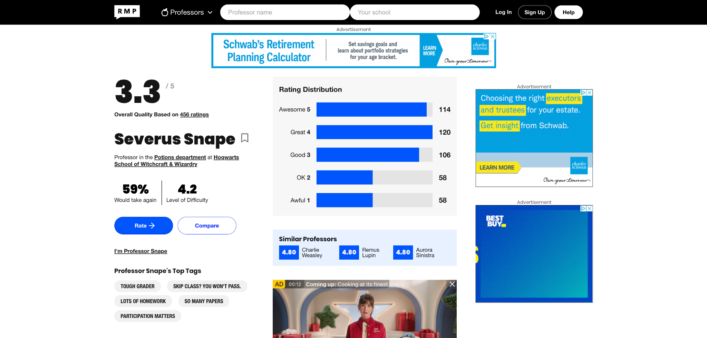
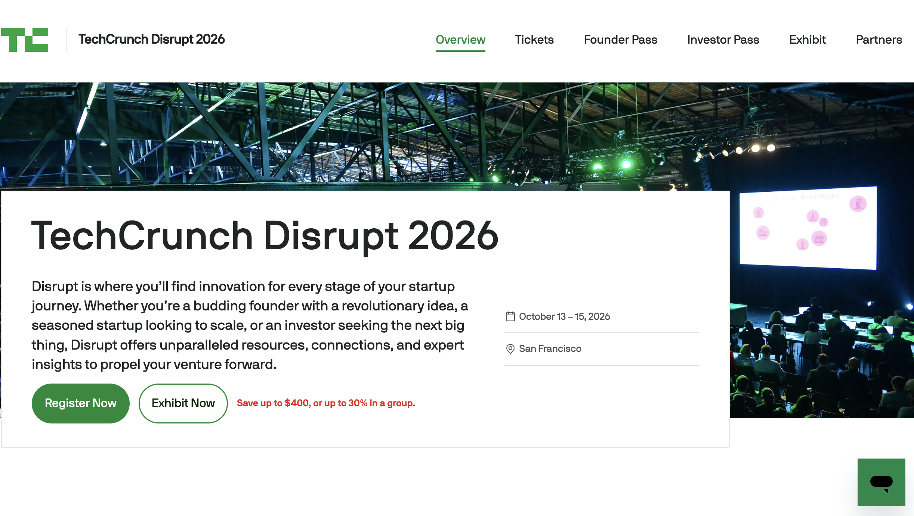
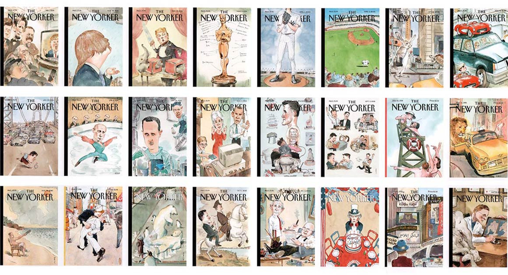

Erin Abrams
Product LeaderPrincipal Product Manager in data, ad tech, and content platforms. I’m a full‑stack product & platform leader driving scalable media experiences through AI, analytics, and bold product strategy. I turn technical ambiguity into meaningful user impact, shape messy data into insight, and ship tools that simplify complexity across organizations.
Product Philosophy
ApproachI believe product management is the art of reducing ambiguity at scale. I lead with clarity, align cross-functional teams around measurable outcomes, and always advocate for thoughtful user experiences. With experience in both large organizations and startup skeleton crews, I'm equally energized by 0→1 systems design and continuous optimization - especially when it unlocks operational excellence or enables creativity across disciplines.
Current Focus
Right now I’m leading product for TechCrunch and Rate My Professors—modernizing legacy surfaces, sharpening monetization, and building the analytics and AI foundations that keep both products trustworthy and fun to use. I also keep a rotation of small product pet projects going to explore new problem spaces and stay close to the craft. Offline, you’ll probably find me cooking, reading on the train, or hanging out with my very opinionated cat, Honey.
Product Leadership & Experience
Principal Product Manager, TechCrunch & Rate My Professors
Leading product at Rate My Professors and TechCrunch. At RMP, I focus on improving the student and professor experience while growing the product’s long-term value. At TechCrunch, I lead platform work across UX, performance, SEO, and our events sites.


Technical Product Manager, Condé Nast – Verso Platform
Owned the product roadmap for Verso, Condé Nast’s design system and publishing platform used across brands like The New Yorker and Vogue. Collaborated with engineers and designers to scale reusable components, reduce redundant work, and ensure fast, consistent multi-brand deployments.

Data Product Manager, Condé Nast – Spire Data Platform
Led product for Spire, the company's proprietary data and targeting platform. Designed tools and pipelines that powered campaign targeting, real-time performance reporting, and high-ROI audience segments. Oversaw cross-functional data operations spanning strategy, privacy, and advertiser tooling.
Skills & Tools
Product & Strategy- Roadmapping & platform modernization
- Cross-functional leadership & stakeholder alignment
- Revenue growth strategy & monetization
- SQL, GA4, Tableau, data visualization
- Audience segmentation & experimentation (A/B testing, feature flags)
- Analytics foundations & KPI design
- Applied AI for content integrity, contextual relevance, and workflow automation
- Perspective API, Amazon Comprehend, Claude, ChatGPT, Cursor
- GraphQL CMS, OpenSearch, Peritext, WordPress
- Google Ad Manager (GAM), Google Tag Manager (GTM)
- Agile product delivery & UX optimization
- Technical architecture collaboration across engineering & design
Side Projects
Neighborhood Circles (working title)
Exploring ways to make it easier for small, trusted groups of friends to share the things they already love— from clothing to books to gear—without adding friction or clutter. I’m focused on lightweight ways to form private “circles,” track what’s available, and make borrowing or gifting feel as simple as texting a friend, while keeping the concept flexible enough to work across different communities.
Volunteer Work
Park Slope Food Co-op
Proud member of the esteemed PSFC. You'll catch me either working the entrance desk, or in the basement packing our beloved cheeses, spices, and teas.
Brooklyn Cat Cafe
Volunteer on the main floor, supporting both guests and adoptable cats. I help maintain a welcoming, safe space for visitors, provide care and enrichment for the animals, and assist with adoption matchmaking to ensure cats are placed in loving homes.
Planned Parenthood
Served as a volunteer patient escort, helping individuals safely and privately access care by providing a calm, supportive presence outside the clinic. I ensured patients could enter the building without facing intimidation or harassment.
Favorite Reads
- Station Eleven - Emily St. John Mandel
- The Wager – David Grann
- They’re Going to Love You – Meg Howrey
- The Heaven & Earth Grocery Store – James McBride
- The Nightingale – Kristin Hannah